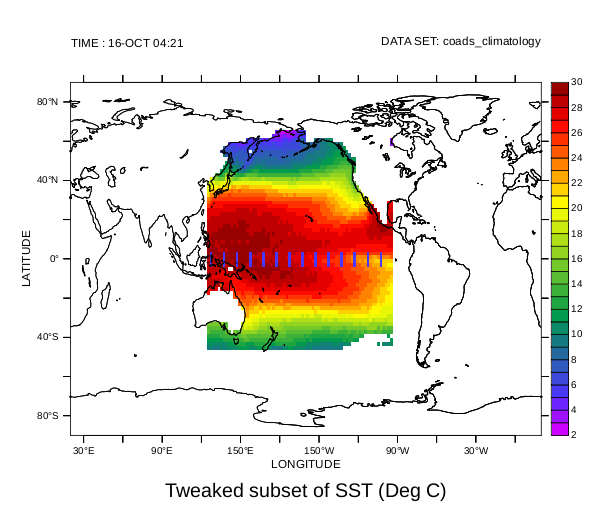

The value returned by the PyFerret getdata function, and used by the PyFerret putdata function, is a dictionary of metadata and data. A description of the keys and values of this dictionary can be obtained from the Python help messages for these functions, for example, help(pyferret.putdata), but is also described here.
The data key
The actual data values are given in an array associated with the "data" key in these dictionaries.
- "data"
- a NumPy array or masked array. Currently, only numeric arrays are supported, and the data will be (or will be treated as) 64-bit floating-point values.
The metadata keys
The following keys and their associated values are used to describe the metadata in these dictionaries.
- "name"
- a string giving the (code) name for the variable in Ferret; for example, "SST"
- "title"
- a string giving the title name for the variable in Ferret; for example, "Sea Surface Temperature"
- "dset"
- the Ferret dataset name or number of this data variable.
- "missing_value"
- the value used as a flag for missing-data. This will be (or will be treated as) a value consistent with the type (including bit size) of the data given by the "data" key.
- "data_unit"
- a string describing the unit of the data
- "axis_types"
- a list of integer values describing the type of each axis. Possible values are the following constants defined by the pyferret module:
- AXISTYPE_LONGITUDE
- a longitude axis, typically in units of degrees east with a modulo of 360
- AXISTYPE_LATITUDE
- a latitude axis, typically in units of degrees north
- AXISTYPE_LEVEL
- a depth or altitude axis, where a depth axes becomes more positive at greater depths
- AXISTYPE_TIME
- a time axis. Each coordinates associated with this axis is an array of six values giving the year, month, day, hour, minute, and second.
- AXISTYPE_CUSTOM
- a custom axis. The axis has floating-point values in some unit of measure; however, Ferret does not try to interpret the units.
- AXISTYPE_ABSTRACT
- an abstract axis. The axis has unit-less integer values.
- AXISTYPE_NORMAL
- the axis is normal to the data (the axis does not "exist" for the data)
- "axis_names"
- a list of strings naming each the axes
- "axis_units"
- a list of strings naming the units of each axis, such as "degrees_east", "degrees_north", or "meters".
For a time axis, thus has the type AXISTYPE_TIME, this names the calendar used for the time steps, as one of the following constants defined in the pyferret module:- CALTYPE_GREGORIAN
- the proleptic gregorian calendar is used, with a leap year occurring every four years except for century years that are not a multiple of 400; thus, on average, the length of a year is 365.2425 days.
- CALTYPE_JULIAN
- the julian calendar is used, with a leap year occurring every four years; thus, on average, the length of a year is 365.25 days.
- CALTYPE_360DAY
- every year consists of 12 months of 30 days
- CALTYPE_NOLEAP
- every year consists of 365 days, with months the length of non-leap-year months
- CALTYPE_ALLLEAP
- every year consits of 366 days, with months the length of leap-year months
- CALTYPE_NONE
- an unspecified calendar
(These calendar-type constants are equal to strings of the constant's name.)
- "axis_coords"
- a list of arrays of coordinates for each axis. For most axes, the array of coordinates is a one-dimensional array of (64-bit) floating-point values. If the axis is normal to the data, thus has the type AXISTYPE_NORMAL, the coordinates "array" will be None. For an axis that is a time axis, thus has the type AXISTYPE_TIME, the array of coordinatesis a two-dimensional array of integers with the shape (N, 6), where N is the number of time points.The six integer values per time point are
- TIMEARRAY_YEARINDEX
- index value in a time step array for the year
- TIMEARRAY_MONTHINDEX
- index value in a time step array for the month
- TIMEARRAY_DAYINDEX
- index value in a time step array for the day
- TIMEARRAY_HOURINDEX
- index value in a time step array for the hour
- TIMEARRAY_MINUTEINDEX
- index value in a time step array for the minute
- TIMEARRAY_SECONDINDEX
- index value in a time step array for the second
Thus, if time_coords is the array of coordinates for a time axis, then time_coords[t, pyferret.TIMEARRAY_YEARINDEX]gives the year at time step t.
An example session using getdata and putdata
The following example session starts as a Ferret session then returns to the Python prompt to work with the Ferret data. Later, the transformed data is then put back into Ferret so that it can then be used as a Ferret variable.
SST SEA SURFACE TEMPERATURE 1:180 1:90 ... 1:12 ... ...
Deg C on grid GSQ1 with -1.E+34 for missing data
X=20E:20E(380) Y=90S:90N
...(output snipped)...yes? exit /topy>>> sstdict=pyferret.getdata("SST[X=125E:95W,Y=45S:65N]", False)>>> print pyferret.metastr(sstdict)title: SST[X=125E:95W,Y=45S:65N]
data_unit: Deg C
missing_value: -9.99999979021e+33
axis_names: ('COADSX', 'COADSY', '', 'TIME', '', '')
axis_types: (1=longitude, 2=latitude, 7=unused, 4=time, 7=unused, 7=unused)
axis_units: ('degrees_east', 'degrees_north', '', 'CALTYPE_GREGORIAN', '', '')
axis_coords: 'COADSX': [ 125. 127. 129. 131. 133. 135. 137. 139. 141. 143. 145. 147. ...(output snipped)...Since the second argument to the getdata function was set to False, the data array in this dictionary is an ordinary NumPy array (not a masked array). This was done so that we could manipulate the undefined values directly. The metastr function produces a nicely-formatted string describing the metadata in the dictionary, which when printed to the console provides an easy w
Continuing the above session, we examine some of the contents of the dictionary, then manipulate some of the data it contains:
>>> sstaxistypes = sstdict["axis_types"]>>> print sstaxistypes(1, 2, 7, 4, 7, 7)>>> sstaxistypes[pyferret.X_AXIS] == pyferret.AXISTYPE_LONGITUDETrue>>> sstdata = sstdict["data"]>>> sstdata.shape(71, 56, 1, 12, 1, 1)>>> sstbadflag = sstdict["missing_value"]>>> print sstbadflag[ -9.99999979e+33]>>> badmask = ( sstdata == sstbadflag )>>> sstbadflag[0] = 1.0E20 >>> sstdata[badmask] = sstbadflag>>> sstlons = sstdict["axis_coords"][pyferret.X_AXIS]>>> m10r7lons = ( sstlons % 10.0 == 7.0 )>>> sstlats = sstdict["axis_coords"][pyferret.Y_AXIS]>>> import numpy>>> midlats = numpy.logical_and(-3.0 <= sstlats, sstlats <= 3.0)>>> tweakit = numpy.outer(m10r7lons, midlats)>>> sstdata[tweakit,:,:,:,:] = 5>>> sstdict["name"] = "TweakedSST">>> sstdict["title"] = "Tweaked subset of SST">>> print sstdict["data"][0:3,0:14:5,0,0,0,0][[ 1.18630772e+01 1.84438629e+01 1.00000002e+20] [ 1.18327265e+01 1.82615910e+01 1.00000002e+20] [ 1.14976921e+01 1.81365108e+01 1.00000002e+20]]>>> print pyferret.metastr(sstdict)name: TweakedSSTtitle: Tweaked subset of SSTdata_unit: Deg Cmissing_value: 1e+20 ...(output snipped)...
Notice that due to floating-point precision, the missing value of -1.0E+34 is actually slightly larger. However, since the missing value and the data array are the same data type, it is still safe use == when generating badmask. In the above we replace the missing value, both in the data array as well as the flag value, with 1.0E+20. Then some of the data values near the equator and at intervals of 10 degrees longitude, are changed to 5.0°C. These changes are reflected in the arrays in the dictionary, as demonstrated by the last two print statements showing the missing data values of 1.0E+20. (This is because only the contents to the NumPy array references were modified, as in sstbadflag[0] = 1.0E20, and not the references themselves, as would be the case with sstbadflag = 1.0E20.) Also shown is the addition of the "name" key, which will be the name of the data variable when put into Ferret, and the changed title for the variable given by the "title" key. The "name" key is not defined by the getdata function.
Continuing the above session, we now use this data and metadata library to create a new variable in Ferret, and enter back into Ferret command-line mode:
>>> pyferret.putdata(sstdict)>>> pyferret.run()yes? show data /full ...(output snipped)... ------ Python Variables ------ TWEAKEDSST Tweaked subset of SST 53:123 23:78 ... 1:12 ... ... Deg C on grid (G002) with 1.E+20 for missing data X=124E:94W Y=46S:66N yes? stats /brief tweakedsst Total # of data points: 194400 (180*90*1*12*1*1) # flagged as bad data: 154140 Minimum value: -1.9043 Maximum value: 32 Mean value: 20.644 (unweighted average) yes? set text /font=arialyes? shade tweakedsst[T=16-OCT]yes? go land 1yes? frame /file=tweakedsst.png /xpix=600
Since the names of the axes were not modified in the dictionary, and the values were recognized as part of the existing axes, the new data set uses these existing axes. This is why the I and J indices of TWEAKEDSST do not start with one. This is also why the shade command, without any region specified, shows the full world map even though TWEAKEDSST is only defined in primarily the Pacific Ocean. The Ferret stats command shows that new missing value has been fully recognized. The purple-blue bars in the plot below show the areas that were modified in the expected positions.
